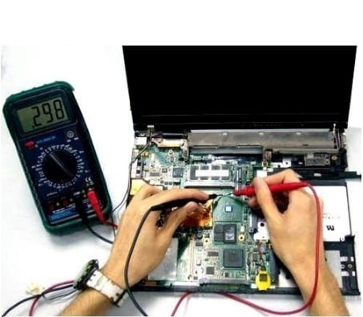
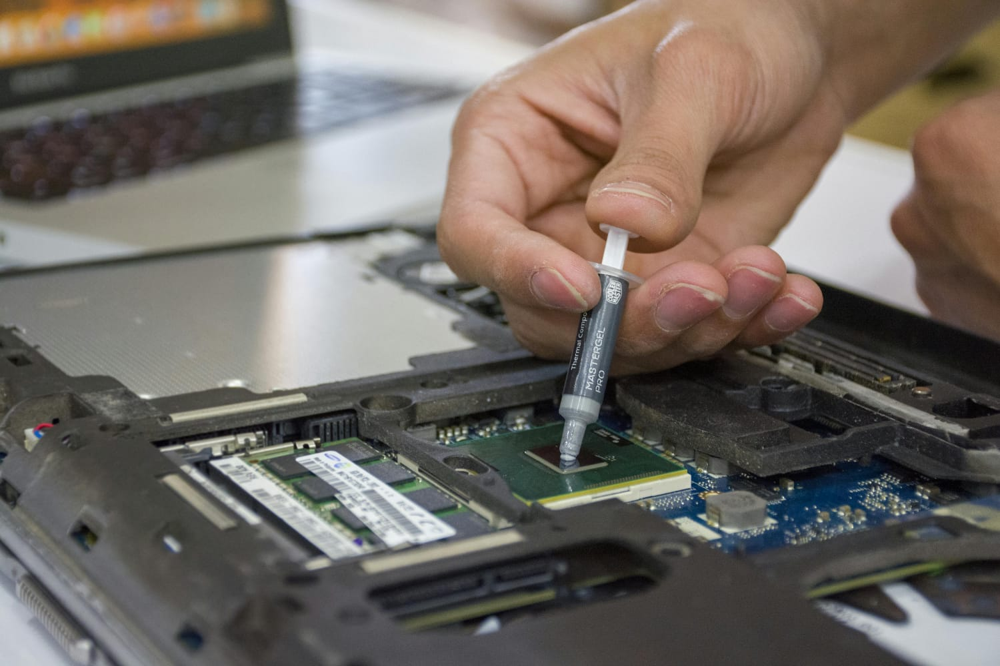
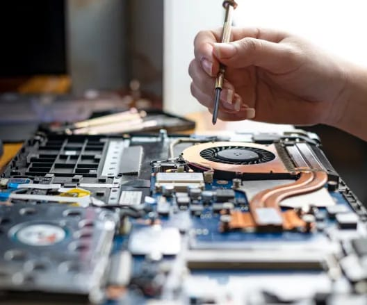

Our Services



- PC and Laptop Diagnostics
- Hardware Repairs (Motherboards, RAM, Hard Drives)
- Software Installation and Troubleshooting
- Virus and Malware Removal
- Data Recovery
- Networking Solutions
About Us
We are a team of certified computer technicians with over 6 years of experience in the industry. Our mission is to provide quick, reliable, and affordable computer repair solutions to our customers.
Contact Us
Email: jaypithadia123@gmail.com
Phone: +1 289 888 3272
Address: 105 West Lodge Avenue, Toronto, ON M6K 2T8